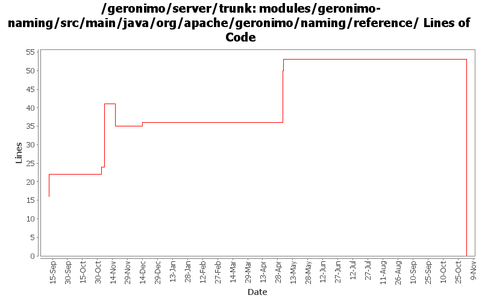

[root]/modules/geronimo-naming/src/main/java/org/apache/geronimo/naming/reference

| Author | Changes | Lines of Code | Lines per Change |
|---|---|---|---|
| Totals | 54 (100.0%) | 81 (100.0%) | 1.5 |
| djencks | 12 (22.2%) | 54 (66.7%) | 4.5 |
| kevan | 21 (38.9%) | 13 (16.0%) | 0.6 |
| jlaskowski | 2 (3.7%) | 13 (16.0%) | 6.5 |
| dain | 4 (7.4%) | 1 (1.2%) | 0.2 |
| prasad | 15 (27.8%) | 0 (0.0%) | 0.0 |
GERONIMO-3565. Modules distributed amongst framework/modules and plugins
0 lines of code changed in 15 files:
GERONIMO-3175 URLReference so url lookups return a new instance each time
0 lines of code changed in 1 file:
GERONIMO-3138 ORB as resource-ref
3 lines of code changed in 1 file:
Add custom handling for resource-env-ref of type UserTransaction
0 lines of code changed in 1 file:
GERONIMO-3131 GERONIMO-3132 GERONIMO-3133 GERONIMO-3134 Defaults for persistence units. Supply locations of jars with persistent classes to the PersistenceUnitInfo. Match a ref with not persistence unit specified to a unique match. Allow wars to have jndi references pointing to the war module, not just the ear
27 lines of code changed in 7 files:
Fixed ejb-ref and ejb-local-ref to business interfaces
1 lines of code changed in 1 file:
GERONIMO-2657 rename entity-manager-factory-ref to persistence-unit-ref
1 lines of code changed in 1 file:
GERONIMO-2537 Update the src headers in server/trunk/modules to be compliant with the new ASF src header and copyright policy (http://www.apache.org/legal/src-headers.html). I also did some cleanup of the src headers and tried to make them all a consistent format
13 lines of code changed in 21 files:
GERONIMO-2460 add application managed JPA support
17 lines of code changed in 1 file:
Partial fix for GERONIMO-2537 All Geronimo source files must be brought in line with the new ASF source header and copyright notice policy
The modules directory is supposed to be migrated. There're some issues with some files, but they'll be handled manually
13 lines of code changed in 2 files:
Changed to be an empty extension of org.apache.xbean.naming.reference.SimpleReference
0 lines of code changed in 2 files:
GERONIMO-2383 Refactor naming builder to a set of registered builders
6 lines of code changed in 1 file: